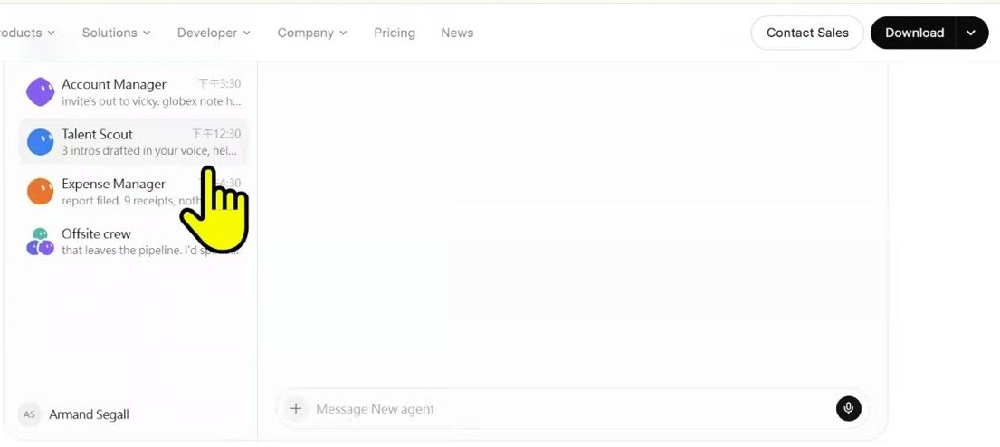
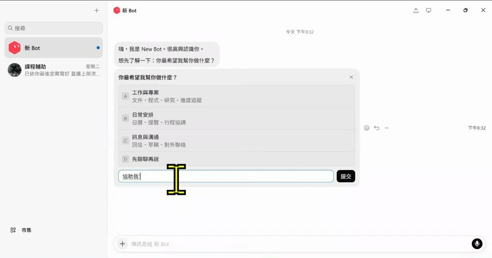
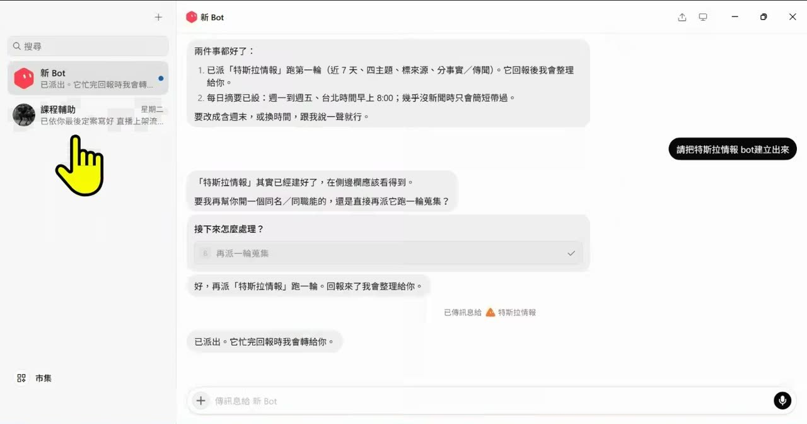
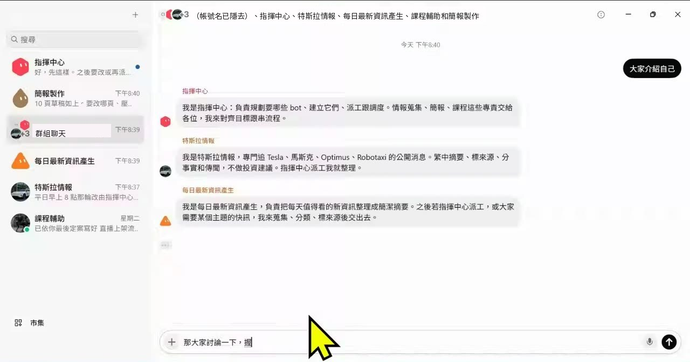
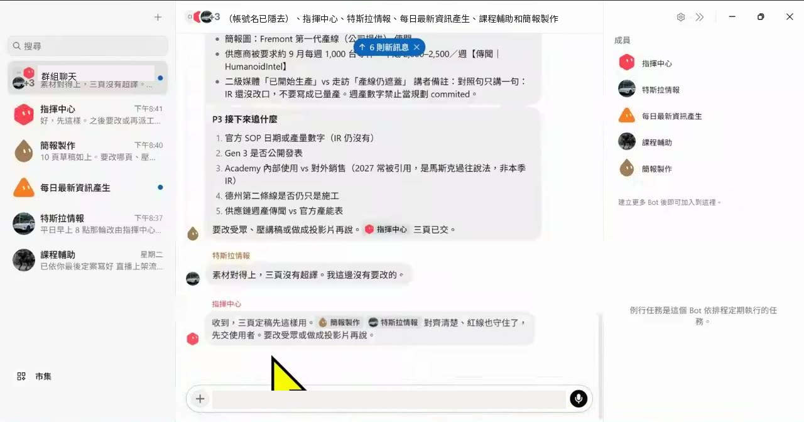
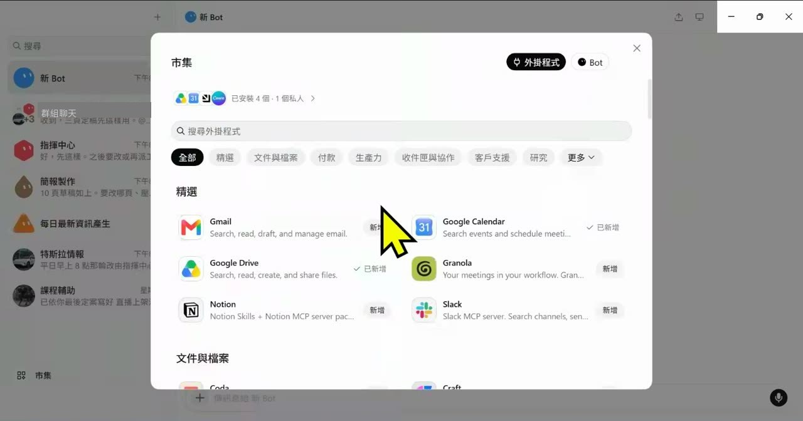
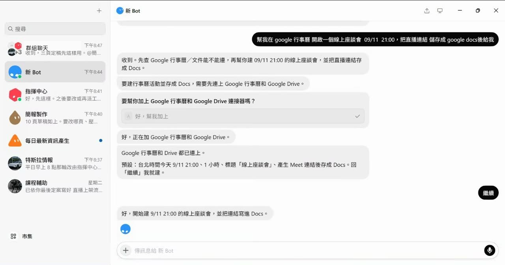
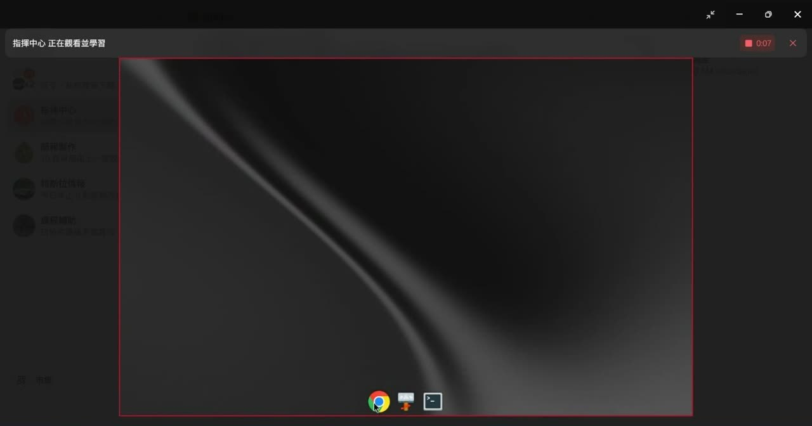
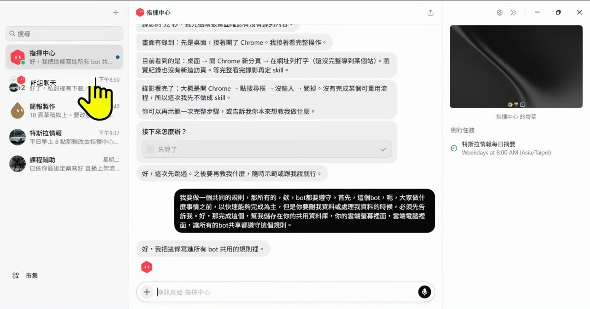
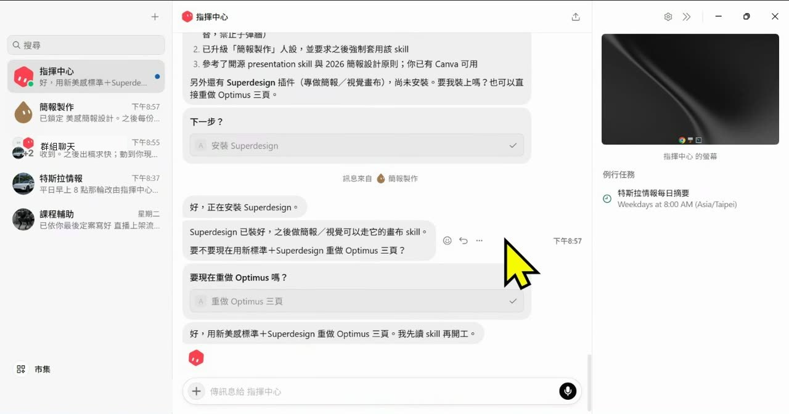

0. 課程資訊與教材
| 課程名稱 | 生成式AI應用電台 直播電台【加播】｜Grok Bot 我也能快速上手（免費版可用） |
|---|---|
| 直播日期 | 2026/09/11（四）21:00–21:30，接在 EP53 同一晚之後加播，本段錄影全長 33 分 38 秒 |
| 講師 | 電台講師（錄影中未提及姓名，本頁不另行標注） |
| 本堂主題 | xAI 剛推出的 Grok Bot 桌面／手機版：下載與免費試用、建第一個 Bot、讓主 Bot 生子 Bot 並排程、群組聊天互相派工、市集連接器（Google 行事曆／Drive）、教它一項任務、共用規則與 Skill 安全 |
| 課程節奏 | 全程螢幕操作、邊做邊講。前 3 分鐘講下載，3–10 分鐘建 Bot，10–16 分鐘群聊派工，16–24 分鐘連接器與技能，24–30 分鐘設定、共用規則與安全，最後 3 分鐘預告秋季共學 |
| 要先準備 | 到 x.ai/bot 下載桌面版（Windows／Mac 自動判斷）；一個 Grok 帳號或 Cursor 帳號用來登入；想試用需綁信用卡（有免費試用期，到期會自動扣款，見第 2 章提醒） |
📁 課堂教材
講師準備了一份 11 頁的圖解簡報（Grok Bot 是什麼、核心特色、10 分鐘建第一位 Bot、好任務指令的 5 個欄位、雲端電腦、外掛不是必要、存成技能、例行任務、多 Bot 分工、第一週安全交付檢查表），課堂上開場秀了一下就直接進軟體示範。簡報版權屬講師，本頁不轉載簡報頁面，只在對應章節引用它的觀念作對照。
🎬 課堂錄影
單段錄影，開頭幾秒是前一段 EP53 的收尾，本頁從 00:30 講師切入 Grok 主題開始整理。
1. 一張圖看懂這堂
整堂只有一條主線：把「一個聊天視窗」換成「一群各有任務的機器人」。講師從左到右走了六步，每一步都是在把工作從自己手上交出去一點。
2. 它不是聊天視窗：一個 Bot 只做一件事，免費版就能先玩
開場三分鐘，講師先把「這東西跟一般 AI 有什麼不一樣」講清楚，再帶大家去下載。
他說 Grok Bot 是 xAI 剛出的新工具，最近比較少人介紹。跟一般的 AI Agent「稍微不太一樣」的地方在於：它不像 ChatGPT 那樣每一個旁邊都是類似的對話視窗，而是「一個機器人做一件事情」——你建的每一個 Bot 都有名字、有任務、有自己的頭像，畫面看起來比較像通訊軟體的聯絡人清單，不像聊天紀錄清單。

x.ai/bot，右上角黑色的 Download 按鈕會依你的電腦自動判斷給 Windows 或 Mac 版。頁面中間是官方的示範畫面，看左欄——Account Manager、Talent Scout、Expense Manager、Offsite crew——每一個都是一個「有職稱的 Bot」，不是一段對話；這就是講師說的「它跟一般 AI 稍微不太一樣」的第一眼證據。［02:31］下載與登入，三件事要知道
- 到
x.ai/bot按 Download，Windows 或 Mac 它會自動跳對的版本。 - 登入可以綁兩種帳號：Grok 帳號或 Cursor 帳號，看你手上有哪個。
- 它有免費試用：講師記得是「綁定信用卡就可以去做體驗跟使用」，送七天還是四天他沒把握。時間到會自動扣款，所以自己要記一個時間。
3. 先建「指揮中心」，再讓它幫你生第一個子 Bot 並排程
這一段是整堂課的核心操作：講師沒有自己一個一個建 Bot，他只建了一個，然後叫它去建其他的。
第一步：按加號，回答它的三個問題
打開軟體，左上角按 ＋，畫面上方會出現「收件者：搜尋或建立 Bot」。講師說這一步的意思是「你要告訴它，你的這個聊天要幹嘛」——你可以叫舊的 Bot 出來，也可以讓它們一起聊，這裡先一個人來，建一個新的。

他給這個 Bot 的定位是一句話——「請作為一個 Bot 生產中心及號令中心」——理由是「我有很多 Agent，但是我希望有個人可以幫我管管這些 Agent，什麼時候該哪個 Agent 出來」。Bot 回覆：好，我來當你的 Bot 生產，負責規劃、派工跟調度。接著它反問你的興趣是什麼。
第二步：講你要什麼，它自己去建子 Bot
講師回答的興趣是特斯拉、馬斯克、人型機器人、無人計程車（德州的 Robotaxi），要一個「新聞收集器」。然後就發生了這堂課最值得看的一幕：指揮中心自己把「特斯拉情報」這個 Bot 建出來了，還幫它設好排程。

第三步：改名、編輯個人資料、給頭像
- 重新命名——把第一個「新 Bot」改名叫「指揮中心」，子 Bot 叫「特斯拉情報」。名字就是它的職稱，之後群聊派工都靠名字認人。
- 編輯個人資料——旁邊是它的基本設定，講師形容「這些是它剛剛寫的，算是它的 agents.md，然後它要做什麼」。你可以再給它一些標籤，讓它記得你要做什麼。
- 設定頭像——可以用 Bot 自己「產生」一張圖（講師點了無人車的圖給特斯拉情報），也可以上傳。他提醒：「這些都是有容量限制的」，玩頭像會消耗 Token，「只是現在玩起來大家可能覺得蠻有趣的」。
第四步：再叫指揮中心生一個「簡報製作」Bot，並派工
同樣的做法再來一次：告訴指揮中心「另外幫我做一個簡報機器人」。建好之後，指揮中心就跟簡報製作說「欸我要製作一個簡報」，用剛剛特斯拉情報收回來的資料做一份 8 到 10 分鐘的內部簡報。畫面上簡報製作沒有馬上跳出來，講師直接把視窗關掉——「關掉它會繼續做」。
4. 開一個群組聊天，讓 Bot 們自我介紹、互相派工做出三頁簡報
有了三四個 Bot 之後，講師做了一件他形容為「瘋群戰術」的事：把它們全部拉進同一個群組。
怎麼建群組
- 按 ＋ 建立新聊天，這次在「收件者」裡把所有 Bot 都加進來（講師用 Ctrl 多選）：指揮中心、特斯拉情報、每日最新資訊產生、課程輔助、簡報製作。
- 群組建好之後，標題列會列出所有成員，右側「成員」欄也看得到每一個 Bot 的名字。
- 先丟一句：「大家介紹自己」。每個 Bot 會依序跳出來說自己負責什麼——講師說「有點像你在 Line 裡面，每個機器人就會開始介紹它是誰」。


一句話啟動：「大家討論一下，我想要介紹 Optimus 的三頁簡報」
講師丟下這句之後就去做別的事了。群組裡發生的分工是這樣：
| 誰 | 做了什麼 |
|---|---|
| 指揮中心 | 先派工：叫特斯拉情報「先補一版相關的資訊」，叫簡報製作「等素材到位之後拿出三頁的簡報」，叫課程輔助「先待命，除非要做交叉資訊」 |
| 特斯拉情報 | 把素材包整理出來：第一頁官方現況、第二頁產線（Fremont 停產 S／X 改裝 Optimus 產線）、第三頁接下來追什麼 |
| 簡報製作 | 拿素材寫三頁草稿，交回群組 |
| 特斯拉情報（再上場） | 當檢查者：「素材對得上，三頁沒有超譯，我這邊沒有要改的」 |
| 指揮中心（收尾） | 宣布定稿，「要改受眾或做成投影片再說」 |
到了 21:00 左右，指揮中心回報「pptx 做好了，檔案已私訊給你」，並把檔案放到 C:\Users\User\Optimus_3pages.pptx。講師打開 PowerPoint 看了一眼：三頁、深底、講者備註在備註欄——「我沒有灌給它任何的 Skill，那就先做一個簡單很粗版的」。這份粗版簡報就是第 8 章要回頭修的對象。
5. Bot 有自己的雲端電腦：關掉視窗它還在做，你的電腦可以關機
講師講了三次「關掉它會繼續做」。這一章把散在三個時間點的說明合在一起。
在群組派工進行中，講師點開了指揮中心右側的「螢幕」——那是一個獨立的畫面，裡面有終端機、有 Chrome。他說：「這邊有一台電腦，它們有一個雲端電腦，這邊是它雲端電腦的運作空間。它不是吃你的電腦，它是吃它放在雲端的資料。」所以 Bot 查資料、跑終端機、做簡報，全部發生在那台雲端機器上。
這件事對你的三個意義
- 不搶滑鼠——「如果大家有用 Agent 應該知道，在做簡報的時候它會搶你的東西。」Grok Bot 不會，因為它根本不在你的桌面上操作。
- 關掉視窗它繼續做——簡報製作沒跳出來？關掉；群組聊天看完了？關掉。回來的時候東西已經做好了。
- 手機版能接手，電腦可以關機——「行動版本的，你就手機就跟你的手機控制 Codex 一樣，只是你的電腦可以關機了。」指揮中心的回報也會傳到手機。
設定頁裡值得看的四個地方
24 分鐘處講師打開設定（左側「一般／電腦／用量與帳單／更新」四項）帶大家看：
| 項目 | 講師怎麼說 |
|---|---|
| 用量與帳單 | 「我現在用了 11，所以其實沒有很多」，額度「4 天後重置」 |
| 使用硬體加速 | 「你的電腦的 GPU 如果夠強，它會更快、更好使用。」他今天用的是一般筆電，所以沒開；設備好的人可以打開 |
| 時區 | 自動偵測（Asia/Taipei），排程任務靠它算時間 |
| 自動審核 | 「你可以告訴它，什麼時候要問你，什麼時候不用問你。」這就是簡報第 11 頁講的「付款、發布、刪除前必須批准」 |
6. 接上連接器（MCP）：一句話開好 Google 行事曆座談會、存成 Docs
講師說這是他對 Grok Bot「最滿意」的一段。他新開了一個 Bot 專門示範連線。
市集裡有什麼
左下角的市集分兩個分頁：外掛程式（連接器）與 Bot（別人寫好的 Bot，可以直接拿來用）。外掛程式又分「精選／文件與檔案／付款／生產力／收件匣與協作／客戶支援／研究」等類別。

實測：一句話開座談會＋存 Docs
講師打了這句（畫面上逐字）：
他特別說明這句話的設計：座談會的名稱沒給，但時間有給；「直播連結」沒說是哪個平台，讓它自己判斷會用 Google Meet。接下來 Bot 做的事：

- Bot 先檢查連接器有沒有接上，沒接上會主動問你要不要加，不用自己去市集找。
- 它判斷這件事要同時用到行事曆和 Drive，所以一次連兩個——講師說「因為兩個都要一起做，所以就交給它吧」。
- 動手前它先把預設值列給你確認（時間、長度、標題、要產生 Meet），你回「繼續」才做。
- 做完回傳三個連結：Meet、Docs、行事曆活動。講師打開自己的 Google 行事曆，活動與連結都在。
7. 技能（Skill）：教它一項任務，錄下你的操作讓它學
連接器是「接工具」，技能是「教做法」。這一段示範沒有完全成功，講師照樣把它講完。
技能從哪裡來，三條路
- 從 GitHub 拿——市集裡可以「GitHub 新增連線」，它會要你填一些值；講師的建議是「請它幫你新增比較快」，不用自己填。
- 用別人寫好的 Bot——市集的 Bot 分頁有現成的可以直接拿來用。
- 在它的雲端電腦裝地端開源模型——「你也可以在這個電腦裡面灌你地端版本的開源的，比如說你要做 DeepSeek 的，都可以放在裡面，你就用它的終端機打開。」他今天沒示範這條。
「教它一項任務」：錄下你的操作
第四條路是這堂課實際示範的：在指揮中心的畫面上點「教它一項任務」，它會跳出一句話——「錄下你執行任務的過程。指揮中心會學習這些步驟，之後可以自行再次執行。」按開始錄製，接下來你做的事它都在看。講師形容「它很像 Power Automate 的內容」，微軟的自動化工具也有類似的錄製功能。

8. 一句語音給所有 Bot 定共用規則，再派指揮中心去修簡報美感
最後五分鐘講師補了他認為「既然要讓這些 Agent 做事情有共識」就一定要做的一件事。
一句語音，寫進所有 Bot 的共用記憶
他對著指揮中心用語音講了這段（畫面上的語音辨識結果逐字，含口語）：

指揮中心把這段整理成兩條寫進「所有 bot 共用的使用者規則」：1. 做事以快速完成為優先；2. 要刪、改、搬、清空你的既有資料，或做破壞性／不可逆處理前，必須先跟你說並確認。並補了一句「一般蒐集、整理、摘要、草稿不受影響。我也在群組裡跟各 bot 公告了」。切到群組畫面，每個 Bot 都回了「收到」。
不滿意簡報？不要自己改，叫指揮中心去找技能
接著他示範怎麼用同一條指揮鏈修東西。他對指揮中心說：「我對簡報製作的 Bot 所製作的簡報非常不滿意，請上網去幫我抓一些 skill，讓它在製作簡報上更有美感、更有藝術感。」然後就不管了。

到 31 分鐘處，「美感版三頁」出來了：深底＋科技紅、英雄句、雙欄、追蹤清單節奏，檔案是 Optimus_三頁_美感版.pptx。指揮中心還誠實補了一句：Superdesign 已安裝，但這個會話裡還沒出現可驅動的畫布工具，「若你要真的走 Superdesign 畫布，跟我說一聲，我下一輪再抓 skill 路徑重跑」。
Skill 要先掃再裝
跟 Codex、OpenCode、Claude Code 比
- 速度——「我覺得不比 Codex 或不比 OpenCode 來的快」，但「有時候 Codex 或 OpenCode 因為你灌了太多的 Skill 反而變慢很多」。
- 指揮中心——「Codex、Claude Code 目前沒有，但是可以寫一個指揮中心。只是官方出的一定會比較順，自己寫的會慢一點。」
- 概念相同——他前幾天在 Line 社群分享過「讓各自的 Agent 各自做事」的做法（今天叫 Codex、今天叫 DeepSeek、今天叫 OpenCode 去幹嘛），「一樣的意思，只是它這邊全部都是 Grok 本身」。
9. 這堂課真正在教的事
把 30 分鐘濃縮成四件事。這四件都不是按鈕在哪裡，是你跟 AI 的關係要怎麼擺。
一、先想「這個 Bot 的職稱是什麼」，再開始打字
講師建的每一個 Bot 都只有一個工作：蒐集特斯拉新聞、做簡報、協助課程、統籌派工。他沒有建一個「什麼都會的助理」。簡報第 4 頁的話是「聚焦的 Bot，比萬能 Bot 更容易累積有用經驗」；他在課堂上的做法是先給名字、再給一句任務、最後才給細節。你打開軟體按加號之前，先想好這一句。
二、你只需要一個指揮中心，其他的讓它去建
整堂課講師親手建的 Bot 只有一個。特斯拉情報是指揮中心建的、簡報製作是指揮中心建的、排程是指揮中心設的、共用規則是指揮中心發的、Superdesign 是指揮中心裝的。你跟一個 Bot 講話，它去管其他的——這是「幕僚」的意思，也是你不會被十幾個 Bot 淹沒的唯一辦法。
三、群組聊天不是聊天，是把工作流程攤在你眼前
「大家討論一下，我想要介紹 Optimus 的三頁簡報」之後，你看到的是：誰先做、誰等誰、誰檢查誰、誰宣布完成。這些在其他工具裡是藏在後台的，在這裡是一則一則訊息。看得到分工，你才知道哪個環節要加一個檢查者、哪個 Bot 該換人設。
四、規則講一次就好，但要在給它權限之前講
講師示範的共用規則只有一條真正的限制：「刪我資料或處理我資料的時候，必須先告訴我。」他是在 Bot 已經能連 Google Drive 之後才補這條的——順序反過來會更好。簡報第 11 頁的 7 天上線階梯是：第 1 天單次任務、第 3 天保存技能、第 7 天加入排程；先讓它做可逆、可查、可接手的事，信任跟著成果一起累積。而不管你信不信任它，別人寫的 Skill 先掃再裝。
10. 老師金句
11. 資料來源與整理說明
| 來源 | 直播電台加播場錄影（2026/09/11），單段，全長 33 分 38 秒；講師 11 頁圖解簡報僅作核對工具名與步驟之用，未轉載 |
|---|---|
| 整理方式 | 全程本機處理：以場景偵測擷取 57 張關鍵畫面、產生 115 段逐字稿，再依逐字稿手寫章節目錄；本頁 10 張截圖全部逐張去識別化後才放上 |
| 時間戳 | 章節標題與引文後方的［mm:ss］對應錄影播放器時間（錄影開頭約 30 秒是前一段 EP53 的收尾，本頁從 00:30 起整理） |
| 整理 | 竹貞（Tarshar 的逐幀筆記專員），2026/09/28 |
已知限制，請先看過再引用
- 逐字稿是機器產生的，人名與工具名會聽錯。本頁修正了可以由畫面或上下文確認的錯字：Grok 被聽成「Glock／Goke／Gl」、Bot 被聽成「Buds／Bud」、ChatGPT 被聽成「chip GPT」、Google 行事曆被聽成「GOOGLE 新勢力／形勢力／行程力」、Google Drive 被聽成「GOOGLE DRIB／領端」、Google Docs 被聽成「GOOGLE DOS」、Optimus 被聽成「Automize／Automax」、GitHub 被聽成「GipHub」、Claude Code 被聽成「Cloud Code」、DeepSeek 被聽成「Deep Stick」、幕僚被聽成「目瞭」、掃讀被聽成「少讀」、龜毛被聽成「龜大」，共 13 類、逾 40 處；不確定的一律保留原樣，沒有猜測補詞。
- 逐字稿在 03:59–04:00 有一段語音辨識錯亂（「幫你學會學習，我種他說……」），內容無法還原，本頁整段捨棄，只保留畫面上看得到的「協助我」與後續指揮中心的定位句。
- 講師口述中把「連接器／外掛程式」與「MCP」混著講，本頁照原話保留他的用詞，另在第 6 章加註畫面上能確認與不能確認的部分。
- 〔待確認〕三處：(1) 22:31 講師提到可在雲端電腦裝的另一個開源模型，逐字稿聽成「Open Loader」，無法由畫面確認是哪一個，本頁未寫入；(2) 21:43 講師把 Grok Bot 跟一個聽起來像「Hermist」的工具相比，無法確認正確名稱，本頁未寫入；(3) 秋季共學的日期逐字稿聽到「28、29 跟到 10 月 1 號」，講師自己也說要再確認，以電台公告為準。
- 第 2 章「免費版可用」的依據是講師口述「我記得是可以免費試用的」與「綁定信用卡就可以去做體驗跟使用」，試用天數他自己說忘了；本頁不補寫數字。
- 可信度分級：金句章 12 則全部是錄影實錄（僅校正上述聽錯的工具名，並把「他」統一為指代 Bot 的「它」）；第 6、8 章的
.code區塊是從畫面逐字抄下來的講師輸入內容（含語音辨識的口語），可能有 OCR 誤差；各章引用簡報頁碼的地方是拿講師簡報作對照，不是課堂口述。 - 逐字稿中出現的學員稱呼、提問者暱稱，本頁一律隱去。
- 課堂截圖已裁掉線上教室右側的與會者欄位（原始畫面 1920×1080，只保留左側 1440×810 的螢幕分享區再縮成 1280×720），並逐張塗掉 Grok 應用程式左下角的操作者帳號名、群組聊天標題列裡的帳號名、Windows 工作列、瀏覽器分頁與書籤列；含講師個人 Google 連結的畫面未選用。本頁 10 張截圖約每 3 分鐘一張，比一般每 10 分鐘一張密——這堂全程是軟體操作，每一張都對應一個沒看過就不知道長什麼樣的畫面。
- 引用到作業、貼文或簡報之前，請對照錄影原始段落再確認一次。